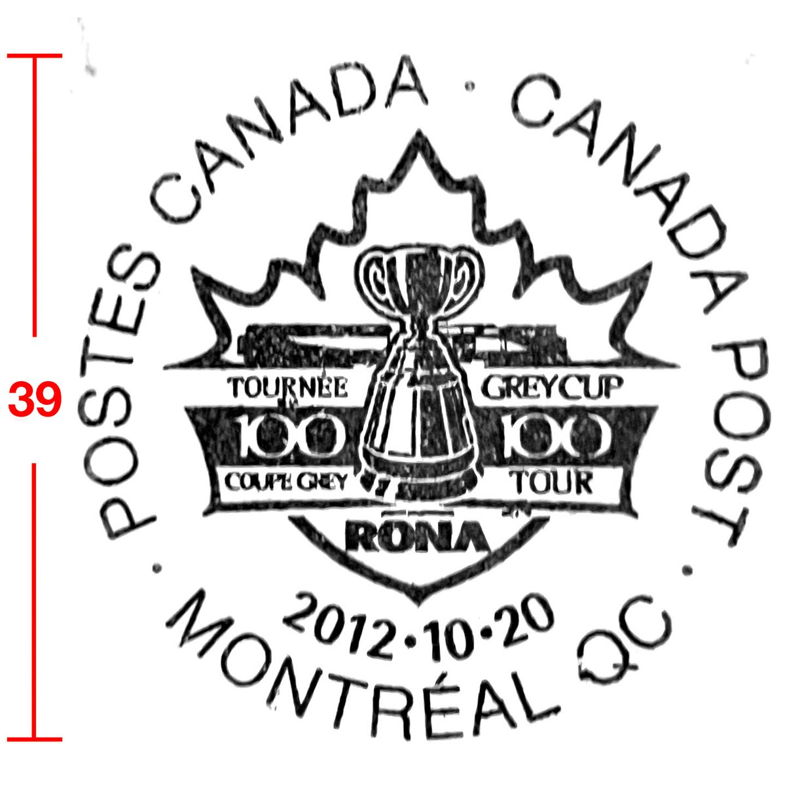

BP Montréal B pictorial cancel
100th anniversary of Grey Cup
- Status
- Expired
- Run dates
- 2012-10-20 to 2012-10-20
- Design
- 100th anniversary of Grey Cup
- Ink colour
- Black
- Designer
- Unknown
- Post office
- BP Montréal B
800 René-Lévesque O
Montreal, QC
H3B 3B0 - Subjects
- sports, Grey Gup, football
- Notes
- The date of this cancel cannot be changed.
This cancel is retired, so the post office can no longer apply it. Covers with it turn up from dealers and other collectors.
 BP Montréal BJazz
BP Montréal BJazz BP Montréal BREM
BP Montréal BREM BP Montréal BChinese
BP Montréal BChinese BP Montréal BStadium
BP Montréal BStadium BP Montréal BJacque-Cartier bridge
BP Montréal BJacque-Cartier bridge